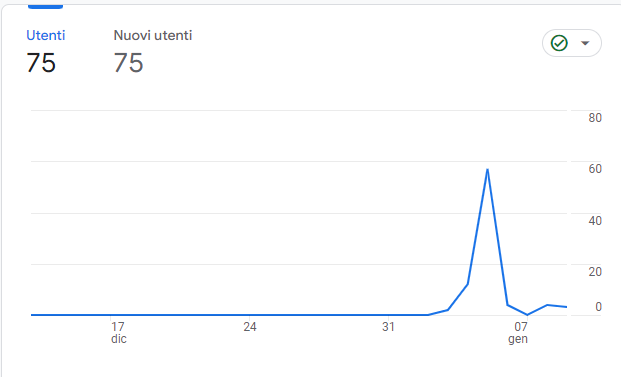
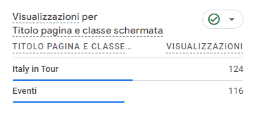

Project Management Plan
- Abstract
- Alla base di questo progetto vi è la volontà di voler creare un sito che aiuti l'utente a cercare i concerti disponibili nelle principali città d'Italia, attraverso un filtro basato sulla scelta di quest'ultima. L'idea è quella di creare un sito veloce, di immediata comprensione e dinamico, sempre aggiornato con i nuovi eventi.
- Benchmarking
- Obiettivo:
L'obiettivo del sito è quello di permettere l'acquisto di biglietti per i concerti in maniera più diretta e immediata, attraverso una grafica pulita; inoltre vi è l'aggiunta di un collegamento con la playlist dell'artista, per rendere l'acquisto meno "meccanico".
- Target utente:
Fascia dai 15 ai 45 anni, indipendentemente dal genere, dall'orientamento sessuale e dal reddito. La lingua scelta è l'italiano, non avendo considerato i concerti e gli eventi al di fuori del territorio italiano.
- Competitors:
Esistono diversi competitors diretti, questi tre ne sono un chiaro esempio: canzoni.it, rockol.it e vivoconcerti.com.
Rockol.it permette di cercare concerti tramite data o città, e poi di acquistarli attraverso ticketone, ha però una grafica spoglia e poco immediata.
Canzoni.it offre un collegamento per acquistare biglietti per spettacoli dal vivo, non solo in Italia; inoltre permette all'utente di visionare classifiche, leggere informazioni sugli artisti e i loro testi musicali, ascoltare alcune canzoni gratuitamente e vedere i video musicali.
Infine vivoconcerti.com è il competitor diretto più simile, sia dal punto di vista delle funzionalità e sia per quanto riguarda la grafica, essendo ricco di immagini. Permette agli utenti di cercare concerti ma anche spettacoli e festival, c'è un collegamento con ticketone per l'acquisto dei biglietti e una sezione apposita per la musica elettronica; inoltre c'è la possibilità di registrarsi ad una newsletter. Le funzionalità sono simili a quelle del sito di cui mi sono occupata, Italy in Tour, solo che quest'ultimo prevede anche un collegamento con spotify per ascoltare i brani degli artisti, ma permette di cercare i concerti prevalentemente tramite città.
- Struttura e layout
- Architettura del sito:
- Home (sitoWeb.html)
- Eventi (citta.html)
- Documentazione (documentazione.html)
- Crediti (crediti.html)
- Wireframe:
- Struttura del sito:
Nella prima pagina troviamo un video di apertura con un titolo, è presente una freccia interattiva che permette all'utente di andare direttamente al menù. Il menù è composto da un titolo, una breve frase introduttiva, che invita a compiere un'azione, e una serie di città accompagnate da un'immagine, sulle quali è possibile cliccare. Infine troviamo una breve descrizione del sito accompagnata dalla documentazione e dai crediti. Cliccando su una città si aprirà la lista dei concerti disponibili in quel determinato luogo, ogni concerto è descritto tramite nome dell'artista, luogo e ora ed è accompagnato da un collegamento con Ticketone, per acquistare il biglietto, e con Spotify, per ascoltare le canzoni dell'artista.
- Stile:
Il layout del sito è molto semplice e pulito, nonostantre sia ricco di immagini. La resposività del sito è stata curata nei minimi dettagli per porterlo adattare ai device mobili (S, M, L) e ai tablet. Il font utilizzato è Montserrat, di tipo sans-serif, chiaro e scorrevole, nonostante il sito sia dotato di pochi paragrafi scritti. I colori utilizzati sono il bianco e una particolare tonalità di azzurro (#0084bc); il sito è ricco di immagini di ottima definizione, che richiamano il colore azzurro, e di un video di apertura, il tutto accompagnato da un overlay per garantire una maggiore omogeneità.
- Linguaggi e strumenti
- I linguaggi web utilizzati sono: HTML, CSS e Javascript. Per quanto riguarda Javascript, ho introdotto anche un file in JSON(Javascript Object Notation) nel quale ho inserito i dati di ogni concerto; questo file viene poi ripreso con una funzione fetch Javascript e un cliclo for. In questo modo non è servito creare tante pagine html quante fossero le città, ma ne è bastata una sola contente lo "scheletro" in seguito riempito con i dati corretti in base alla città scelta.
Note: per non avere problemi con il CORS e mandare a buon fine la richiesta asincrona di caricamento dati in get, ho utilizzato il comando http-server nel prompt dei comandi.
- Gli strumenti a supporto della progettazione utilizzati sono: Sublime Text 3, Github e Google Analytics.
- Per ulteriori informazioni rimandiamo alla pagina Crediti
Communication strategy
- Obiettivi Comunicativi
- L'obiettivo è quello di far si che il sito venga conosciuto, frequentato e sopratutto utilizzato come punto di riferimento quando si vuole prenotare un concerto. Traducendo l'obiettivo in termini quantitativi si vogliono raggiungere almeno 50 visite uniche.
- Promozione
- Il sito si pone come tramite nella vendita di un prodotto, cercando di rendere l'acquisto più immediato e semplice. Per pubblicizzarlo si sono utilizzati gruppi Whatsapp e altre piattaforme social di messaggistica.
- Valutazione dei risultati
- Il risultato è stato raggiunto e superato il 5 gennaio, le visualizzazioni e tutte le altre informazioni sono state monitorate grazie a Google Analytics.

